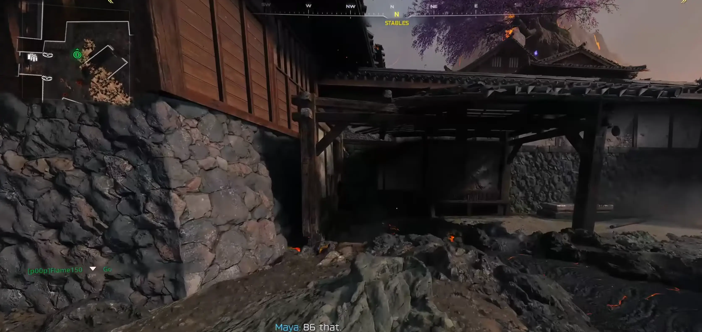
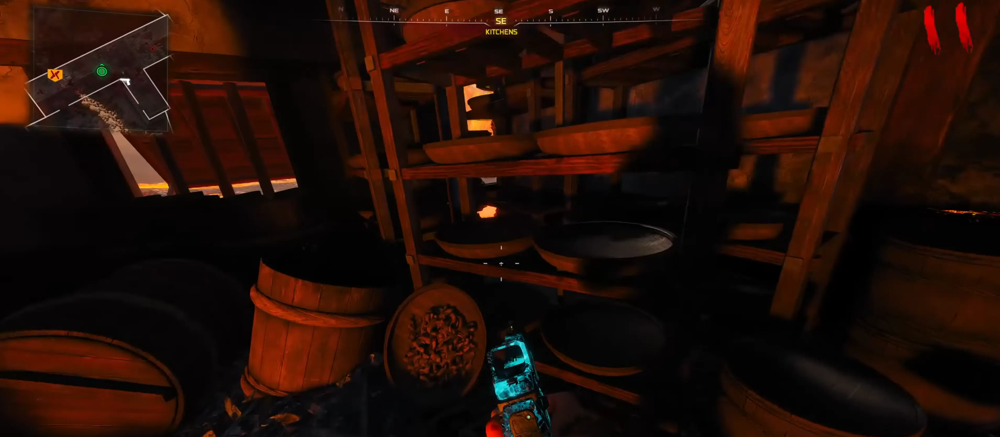
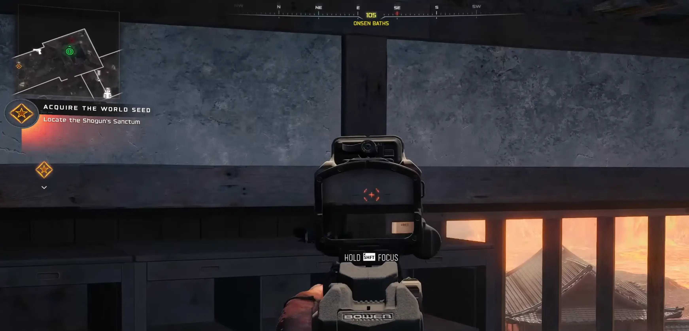

Słuchawki możecie zebrać w dowolnej kolejności.
Udaj się do lokacji Stajnie. Skieruj się do rogu pomieszczenia. Szukaj słuchawek ukrytych za skrzyniami – podejdź i wejdź z nimi w interakcję, aby je aktywować.

Przejdź przez Flower Garden (Ogród kwiatowy) w stronę Kitchens. Wejdź po schodach na górę. Udaj się na tyły pomieszczenia. Słuchawki leżą ukryte zaraz za miską – aktywuj je.

Leć do lokacji Onsen Baths. Wypatruj regałów/półek znajdujących się w tej sekcji. Słuchawki znajdziesz na samej górze jednej z półek – to ostatni element układanki.

Gdy aktywujesz wszystkie trzy pary, usłyszysz głos Malukah, który przeprowadzi Cię przez kolejne fale niebezpieczeństwa. Lećcie po ulepszenia i cieszcie się muzyką!